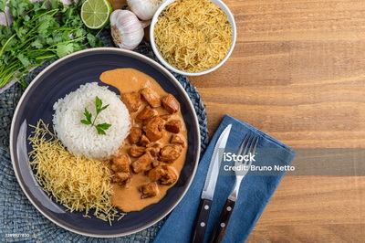

Stroganoff
Ingredients
- 1 tbsp olive oil
- 1 onion, sliced
- 1 clove of garlic
- 1 tbsp butter
- 250g mushrooms, sliced
- 1 tbsp plain flour
- 500g fillet steak, sliced
- 150g crème fraîche
- 1 tsp English mustard
- 100ml beef stock
- Half small pack of parsley, chopped

Modus Operandi
- Heat 1 tbsp olive oil in a non-stick frying pan then add 1 sliced onion and cook on a medium heat until completely softened, around 15 mins, adding a little splash of water if it starts to stick.
- Crush in 1 garlic clove and cook for 2-3 mins more, then add 1 tbsp butter.
- Once the butter is foaming a little, add 250g sliced mushrooms and cook for around 5 mins until completely softened.
- Season everything well, then tip onto a plate.
- Tip 1 tbsp plain flour into a bowl with a big pinch of salt and pepper, then toss 500g sliced fillet steak in the seasoned flour.
- Add the steak pieces to the pan, splashing in a little oil if the pan looks dry, and fry for 3-4 mins, until well coloured.
- Tip the onions and mushrooms back into the pan. Whisk 150g crème fraîche, 1 tsp English mustard and 100ml beef stock together, then stir into the pan.
- Cook over a medium heat for around 5 mins.
- Scatter with some chopped parsley, and serve with pappardelle or rice.